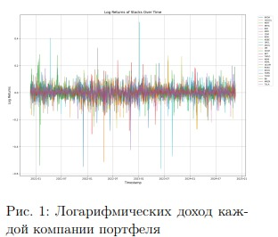
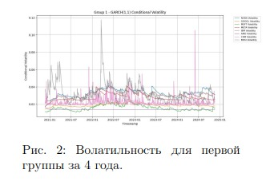
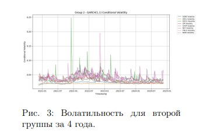
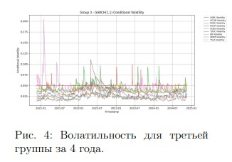
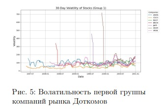
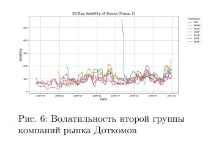

Введение
Искусственный интеллект (ИИ) стал одной из самых актуальных тем в мире технологий, поскольку его рынок переживает стремительный рост, привлекает значительные инвестиции
и вызывает значительный ажиотаж в средствах массовой информации. Однако такая динамика часто сопровождается чрезмерным оптимизмом - явлением, которое исторически приводило
к образованию спекулятивных пузырей. Ярким примером является пузырь доткомов конца 1990-х годов, когда завышенные ожидания в отношении интернет-технологий привели к краху
рынка и значительным финансовым потерям.
Спекулятивный пузырь возникает, когда активы становятся переоцененными из-за ажиотажа и спекулятивных инвестиций, проходя через такие стадии, как вытеснение, бум, эйфория, фиксация прибыли и паника,
как описано в модели финансовой нестабильности Мински [1]. Анализ рынкаискусственного интеллекта через призму этих этапов позволяет нам оценить, свидетельствуют ли текущие инвестиции о формировании пузыря.
Одной из ключевых характеристик рынка ИИ является его чрезвычайно высокая капиталоемкость. Разработка и обучение моделей ИИ требует значительных финансовых ресурсов, включая создание собственной инфраструктуры и приобретение мощных
вычислительных систем. Например, для обучения большим языковым моделям, таким как GPT, требуются тысячи графических процессоров (GPU) или специализированных чипов — как видно из сотрудничества OpenAI и Broadcom
для внутренней разработки, — что делает этот процесс доступным только для крупных игроков со значительными финансовыми возможностями.
Более того, работа с уже подготовленными моделями требует значительных вычислительных мощностей, что создает барьеры для входа новых участников. Следовательно, на рынке
формируется двухуровневая структура. С одной стороны, крупные компании инвестируют в собственные исследования и разработки. С другой стороны, есть более мелкие игроки, которые полагаются на инфраструктуру этих крупных компаний, предлагая
конечным пользователям решения путем интеграции сторонних моделей в свои продукты.
Такая структура рынка повышает риски возникновения спекулятивного пузыря. Небольшие компании часто оцениваются не на основе фактических доходов или устойчивых бизнесмоделей, а на основе ожиданий относительно их способности в будущем монетизировать решения в области искусственного интеллекта. Аналогичным
образом, значительные инвестиции направляются в стартапы, которые, несмотря на смелые заявления, могут с трудом конкурировать на высококонкурентном рынке из-за зависимости от крупных поставщиков технологий и высоких операционных издержек.
Средства массовой информации сыграли значительную роль в формировании общественного мнения об ИИ, подчеркивая его преобразующий потенциал и в то же время преуменьшая
нерешенные проблемы, такие как предвзятость алгоритмов, нормативные препятствия и высокие затраты на внедрение [2] [3]. Это способствовало всплеску энтузиазма инвесторов, часто не связанного с технологической зрелостью
и практической применимостью решений на основе искусственного интеллекта.
Учитывая параллели с прошлыми спекулятивными пузырями, включая эпоху доткомов, крайне важно критически проанализировать, не демонстрирует ли рынок искусственного интеллекта признаков переоценки. Историческая картина образования пузырей, характеризующаяся смещением, приводящим к всплеску интереса, спекулятивным инвестициям и, в конечном
счете, к краху, поднимает вопросы об устойчивости текущих тенденций в секторе искусственного интеллекта. Выявление признаков пузыря на ранней
стадии имеет жизненно важное значение для принятия инвесторами обоснованных решений, а регулирующими органами - для принятия мер, обеспечивающих стабильность рынка.
Основная цель этой работы - определить, проявляет ли нынешний рынок ИИ признаки спекулятивного пузыря. Гипотеза заключается в том, что ИИ представляет собой потенциальный
пузырь, в котором завышенные ожидания и инвестиции превосходят реальную ценность и зрелость технологии. В частности, цель исследования - оценить, соответствуют ли текущие
инвестиции в искусственный интеллект реальной технологической зрелости и ценности, проводя параллели с историческими примерами, такими как пузырь доткомов.
Для достижения этой цели исследование включает анализ финансовых данных ведущих компаний, работающих с использованием искусственного интеллекта, для выявления спекулятивных колебаний цен и моделей волатильности, указывающих на завышение курса. Кроме того, изучение психологии рынка и поведения инвесторов, включая освещение в СМИ и настроения общественности, помогает выявить тенденции, вызванные ажиотажем, и стадный менталитет инвесторов. Объединяя эти подходы, исследование дает всестороннюю оценку текущего состояния рынка искусственного
интеллекта.
Понимание этой динамики имеет решающее значение для снижения рисков и разработки обоснованной политики и инвестиционных стратегий.
По мере продвижения исследования будет проводиться более глубокий анализ рыночных данных и поведения инвесторов, чтобы сделать значимые выводы о стабильности рынка искусственного интеллекта, тем самым способствуя разработке стратегий, обеспечивающих устойчивый рост на технологических рынках
В данном исследовании используется смешанный подход, позволяющий получить целостное представление о рынке искусственного интеллекта. Количественные методы основаны
на математическом моделировании для
выявления признаков неустойчивого роста, а также качественные методы применимые для анализа поведения инвесторов и настроения на рынке. Такое сочетание важно, поскольку финансовые пузыри часто связаны как
с измеримыми финансовыми тенденциями, так и с не поддающимся количественной оценке поведением людей,
таким как рыночная эйфория и спекулятивные инвестиции. Сравнение с пузырем доткомов служит ориентиром
для выявления аналогичных закономерностей на рынке искусственного интеллекта, и этот двойной подход обеспечивает надежный анализ как динамики рынка, так и психологии инвесторов.
Качественный Анализ
Анализ Трансформационного
потенциала искусственного
интеллекта, аналогичного интернету
в 1990-х годах
Искусственный интеллект (ИИ)
часто сравнивают с интернет-бумом 1990-
х годов, учитывая его потенциал для
преобразования отраслей и переосмысления бизнес-операций. Как и ранний
Интернет, искусственный интеллект окружен огромной шумихой и инвестициями, но большая часть этого энтузиазма сосредоточена на спекулятивных
обещаниях, а не на проверенных практических приложениях. В то время как
искусственный интеллект демонстрирует потенциал в таких отраслях, как
здравоохранение, финансы и производство, значительная часть компаний в
этом секторе изо всех сил пытается продемонстрировать ощутимую ценность,
что вызывает опасения некоторых инвесторов по поводу того, не переоценивает ли рынок непосредственное влияние технологии [4].
Аналогичным образом, поставщики инфраструктуры искусственного интеллекта, такие как производители графических процессоров и платформы
облачных вычислений, имеют решающее значение для экосистемы. Однако
прогнозы о взрывоопасном развитии
сектора, например, о том, что к 2030
году рынок генеративного ИИ достигнет 826,7 миллиардов долларов, могут
быть завышены, если технология не
получит широкого практического применения [5].
В то время как McKinsey сообщает, что 65% организаций начали использовать генеративный ИИ, большая
часть этого использования остается экспериментальной и не дает ощутимых
результатов, что отражает спекулятивное внедрение непроверенных технологий во время пузыря доткомов ([3]).
Стремительный рост инвестиций в искусственный интеллект свидетельствует о несоответствии между рыночными оценками и фактической зрелостью
технологии
Анализ освещение событий в
СМИ и анализ общественных
настроений: роль циклов ажиотажа в
технологиях искусственного
интеллекта.
Освещение событий в средствах
массовой информации играет ключевую роль в формировании общественного мнения и разжигании ажиотажа
вокруг искусственного интеллекта (ИИ).
В период с 2020 по 2023 год количество упоминаний ИИ в СМИ увеличилось на 125%, при этом в 60% статей
подчеркивался его преобразующий потенциал в таких секторах, как здравоохранение и финансы [6]. В этом повествовании искусственный интеллект
часто изображается как непреодолимая сила прогресса, согласно прогнозам, к 2030 году объем рынка достигнет 1 трлн долларов [5]. Однако эти
описания часто игнорируют нерешенные проблемы, такие как предвзятость
алгоритмов, риски для конфиденциальности и ограниченное поддающееся измерению воздействие — только 35% ком
паний сообщают о значительном повышении производительности благодаря ИИ [7].
Оптимистичные репортажи в средствах массовой информации привели
к нереалистичным ожиданиям общественности. В то время как 78% статей
подчеркивают потенциал ИИ в решении глобальных проблем, только 18%
людей осведомлены о таких рисках, как
смена работы и неправильное использование данных [3]. Освещение противоречий в области ИИ, таких как этические проблемы, связанные с распознаванием лиц, часто трактуется как
временные неудачи, укрепляя веру в
неизбежный прогресс ИИ [8].
Этот ажиотаж также выгоден коммерческим и институциональным кругам, поскольку правительства и корпорации используют общественный энтузиазм для оправдания инвестиций,
а глобальное финансирование ИИ в 2023
году превысит 90 миллиардов долларов [9]. Однако быстрое внедрение без
надлежащего надзора может усугубить
социальные проблемы.
Анализ психологии рынка в
секторе искусственного интеллекта:
сравнение циклов ажиотажа,
спекулятивного инвестиционного
поведения и рыночной эйфории
между двумя
"пузырями"искусственного
интеллекта.
Рынок ИИ пережил периоды подъема и спада, отмеченные ажиотажем,
спекулятивными инвестициями и рыночной эйфорией. Сравнение раннего
бума ИИ в конце 1990-х годов с нынешним всплеском показывает повторяющиеся закономерности в психологии рынка и поведении инвесторов.
Циклы ажиотажа: По определению Gartner, циклы ажиотажа ведут
от завышенных ожиданий к повышению производительности. В конце 1990-
х годов достижения в области машинного обучения привлекли внимание средств
массовой информации и привлекли инвестиции в размере около 10 миллиардов долларов [29]. В 2023 году объем финансирования в области искусственного интеллекта вырос до 150 миллиардов долларов благодаря таким прорывам, как GPT-4 и корпоративные
инвестиции [10]. Количество упоминаний в СМИ об искусственном интеллекте выросло на 125% с 2020 года,
что подчеркивает циклический характер ажиотажа [4].
Спекулятивное инвестиционное поведение: Пик спекулятивных инвестиций приходится на периоды ажиотажа, вызванного FOMO и ожиданиями
высокой доходности. Ранний бум ИИ
привел к тому, что стартапы привлекали финансирование без жизнеспособных продуктов, что привело к "зиме
ИИ". В 2023 году объем венчурного
капитала в сфере искусственного интеллекта превысил 60 миллиардов долларов, а некоторые стартапы достигли оценки в 100 миллиардов долларов,
несмотря на недостаточную прибыльность [29]. Эта тенденция свидетельствует о том, что потенциал становится важнее фундаментальных показателей.
Эйфория рынка: Эйфория возникает, когда цены превышают внутренние значения, основанные на оптимизме. В конце 1990-х годов переоцененные компании, занимающиеся ИИ, столкнулись с корректировками, которые подорвали доверие. Аналогичным образом, в 2023 году индекс искусственного интеллекта Nasdaq вырос на 120%
благодаря ажиотажу и освещению в
СМИ, несмотря на то, что только 35%
компаний сообщили о значительной рентабельности инвестиций в искусственный интеллект [7] [11]. Такое несоответствие повышает риск коррекции, если ожидания опережают технический
прогресс.
Сравнительный анализ и последствия: Оба пузыря искусственного интеллекта демонстрируют повторяющиеся циклы ажиотажа, спекулятивных
инвестиций и эйфории. Хотя современный рынок искусственного интеллекта выигрывает от улучшения инфраструктуры и передовых технологий, а
прогнозируемый доход к 2030 году составит 1,5 трлн долларов [5], чрезмерная зависимость от рекламы остается
рискованной. Баланс между оптимизмом и реалистичными оценками технологической и рыночной жизнеспособности имеет решающее значение для
предотвращения прошлых ошибок [7]
[10].
Оценка технологического и
экономического воздействия
спекулятивных пузырей в
высокотехнологичных секторах на
более широкие экономические
показатели.
Спекулятивные пузыри часто ускоряют инновации. В период с 2020 по
2023 год глобальные инвестиции в исследования и разработки в области искусственного интеллекта выросли на
40%, достигнув 200 миллиардов долларов, что способствовало прогрессу в
области машинного обучения и генеративного ИИ, такого как GPT-4, который, по прогнозам, к 2026 году сэкономит отрасли здравоохранения 150 миллиардов долларов в год [3] [12]. Однако пузыри также приводят к неправильному распределению приоритетов.
В эпоху доткомов в технологии было
инвестировано 1,7 трлн долларов, из
которых 50% были вложены в неустойчивые стартапы [13]. Аналогичным образом, в 2023 году только 10% финансирования ИИ было направлено на такие важные области, как этика и кибербезопасность [2].
Экономический рост и волатильность рынка: Рыночные пузыри стимулируют краткосрочный экономический рост. Вклад индустрии искусственного интеллекта в мировой ВВП вырос с 327 миллиардов долларов в 2021
году до ожидаемых 1,4 триллиона долларов к 2025 году, а внедрение искусственного интеллекта, по прогнозам,
увеличит ВВП на 15,7 триллиона долларов к 2030 году [10]. 60% организаций сообщают о повышении эффективности благодаря внедрению ИИ [7].
Однако рыночные изменения сводят на
нет эти достижения. Крах доткомов
обесценил 5 трлн долларов и привел
к снижению ВВП США на 0,3%, в результате чего было закрыто 48% технологических стартапов [13]. Аналогичный крах ИИ может дестабилизировать рынки и затруднить финансирование.
Динамика занятости: Экономический бум увеличивает спрос на рабочие места; с 2021 по 2023 год число
рабочих мест, связанных с искусственным интеллектом, выросло на 35%, а
зарплаты инженеров по машинному обучению выросли на 20%. С 2020 года искусственный интеллект создал 300 000
рабочих мест по всему миру в таких
областях, как наука о данных и робототехника [28]. Однако коллапсы приводят к массовым увольнениям. Крах
доткомов сократил 200 000 рабочих мест
в сфере технологий в США и увеличил глобальную безработицу в сфере
технологий на 12% [13]. Поскольку только 40% работников подготовлены к работе с ИИ, необходима переподготовка
[28].
Более широкие экономические показатели: Спекулятивные пузыри влияют на доверие потребителей и инфляцию. Продажи продуктов, связанных
с искусственным интеллектом, растут
на 18% ежегодно с 2020 года [2]. Тем не
менее, рыночные изменения снижают
потребительские расходы до 10%, как
это наблюдалось во время спада в сфере доткомов [13]. Растущий спрос на
полупроводники привел к росту цен
на чипы на 30% с 2021 года, что усилило инфляционное давление [27].
Последствия для политики: Эффективный надзор со стороны регулирующих органов может снизить риски. Прозрачная отчетность и ответственная инвестиционная практика имеют
решающее значение. Стимулирование
таких недофинансируемых областей, как
этика искусственного интеллекта (15%
финансирования в 2023 году), обеспечивает сбалансированное развитие [14].
Финансовая грамотность и диверсифицированные стратегии снижают системные риски, связанные с изменениями
на рынке.
Оправдывает ли реальное
применение искусственного
интеллекта текущие рыночные
оценки?
Текущие рыночные оценки компаний, занимающихся искусственным
интеллектом, чрезмерно оптимистичны, что обусловлено спекулятивными
инвестициями и ажиотажем в средствах
массовой информации. Например, мировой рынок искусственного интеллекта, который в 2023 году оценивался в
207,9 миллиарда долларов, по прогнозам, достигнет 1,8 триллиона долларов к 2030 году [30]. Этот стремительный рост свидетельствует о преобразующем потенциале искусственного интеллекта, но не учитывает технологические, этические и логистические проблемы, которые все еще препятствуют
его широкому внедрению.
В таких секторах, как здравоохранение, розничная торговля и финансы, ИИ перспективен, но находится на
ранней стадии развития. Внедрение ИИ
в здравоохранение, особенно в диагностику и персонализированную медицину, остается ограниченным из-за нормативных препятствий, проблем конфиденциальности и необходимости тщательной клинической проверки. Хотя,
по оценкам McKinsey, к 2030 году ИИ
может ежегодно экономить $1 трлн на
мировом здравоохранении, этот потенциал еще предстоит реализовать, а стоимость стартапов с ИИ в сфере здравоохранения, которые в 2021 году получили венчурное финансирование в
размере $11,3 млрд, кажется завышенной, учитывая медленные темпы внедрения [9].
В розничной торговле влияние ИИ
было незначительным, в основном это
касалось улучшения рекомендательных
систем и логистики. Accenture прогнозирует, что ИИ может повысить прибыльность розничной торговли на 60%
к 2035 году, но его текущее использование носит постепенный, а не преобразующий характер. Аналогичным образом, в сфере финансов роль искусственного интеллекта ограничена такими областями, как алгоритмическая
торговля и выявление мошенничества,
которые, хотя и приносят пользу, не
революционизируют отрасль.
Развитие генеративного ИИ еще
больше подчеркивает это несоответствие
между ожиданиями и реальностью. Такие компании, как OpenAI, стоимость
которых оценивается в десятки миллиардов долларов, все еще находятся
в основном на экспериментальной стадии. Несмотря на свой потенциал по
преобразованию процессов создания контента и обслуживания клиентов, генеративный ИИ сталкивается с такими
проблемами, как предвзятость, дезинформация и высокие эксплуатационные расходы, которые затрудняют его
широкое внедрение [15].
Влияние ИИ на рынок труда добавляет еще один уровень неопределенности. Хотя к 2025 году ИИ может
создать 97 миллионов новых рабочих
мест, ожидается также, что 85 миллионов из них будут ликвидированы, поскольку многие новые должности потребуют специальных навыков [28].
Анализ отраслевого влияния
искусственного интеллекта на
отрасли: финансов, здравоохранения
и производства.
Искусственный интеллект часто
называют преобразующим фактором
в таких отраслях, как финансы, здравоохранение и производство, но его влияние по-прежнему ограничено из-за нормативных, технических и стоимостных
барьеров.
В финансовой сфере искусственный интеллект используется для выявления мошенничества, оценки кредитоспособности и алгоритмической торговли, но в основном он автоматизирует существующие процессы. По данным "Делойта 79% финансовых компаний исследуют искусственный интеллект, но только 10% сообщают о значительных результатах, что указывает на разрыв между экспериментами
и реальными результатами. Опасения
по поводу конфиденциальности данных
и прозрачности алгоритмов еще больше замедляют внедрение, особенно в
таких чувствительных областях, как
кредитование [7].
В здравоохранении ИИ применяется в диагностике, персонализированной медицине и управлении данными
о пациентах, но его влияние все еще
находится на ранней стадии. Несмотря на то, что в 2021 году глобальные
расходы на ИИ в сфере здравоохранения составят 11 миллиардов долларов, масштабных улучшений результатов лечения пациентов пока не наблюдается. Инструменты искусственного интеллекта требуют контроля со
стороны человека, а строгие процедуры регулирования препятствуют их более широкому внедрению [2].
На производстве искусственный
интеллект используется для автоматизации и прогнозирования технического обслуживания, но его применение
ограничено высокими затратами и проблемами интеграции с устаревшими системами. Исследование McKinsey показало, что, хотя 64% производителей
тестируют искусственный интеллект,
только 20% реализовали эти проекты
в полном объеме, при этом проблемы
совместимости и рабочей силы выступают в качестве барьеров [3].
Во всех секторах зависимость ИИ
от высококачественных и доступных
данных является основным ограничением. Согласно отчету Всемирного экономического форума, 75% организаций
называют качество и доступность данных ключевыми препятствиями для внедрения ИИ, особенно в таких регулируемых отраслях, как здравоохранение
и финансы [28].
Анализ государственной
политики: потенциальные
антимонопольные меры и их влияние
на компании, занимающиеся
разработкой искусственного
интеллекта.
Государственная политика и антимонопольные меры все больше формируют рынок искусственного интеллекта, направленный на предотвращение монополистического контроля и обеспечение соблюдения этических стандартов. В США Федеральная торговая комиссия (FTC) и Министерство юстиции (DOJ) проанализировали более 30
слияний, связанных с искусственным
интеллектом, в 2022 году, что свидетельствует о том, что основное внимание уделяется пресечению монополистической практики в сфере технологий ref6
Европейский союз совершенствует свою нормативную базу с помощью
Закона об искусственном интеллекте,
который вступит в силу в 2024 году.
Закон классифицирует системы искусственного интеллекта по степени риска и предъявляет строгие требования
к приложениям с высокой степенью риска. Затраты на соблюдение требований для компаний, занимающихся ИИ,
в ЕС могут вырасти на 20%, что может непропорционально сильно повлиять на малые и средние предприятия
(МСП) [2]. Опрос Европейской комиссии показал, что 47% МСП беспокоятся о своей конкурентоспособности изза этих затрат.
Китай активно инвестирует в ИИ,
выделив в 2022 году 22 миллиарда долларов, чтобы к 2030 году стать мировым лидером. Однако строгие законы
о локализации данных и этические нормы создают значительные барьеры для
иностранных компаний, занимающихся ИИ. Более 55% иностранных компаний, занимающихся ИИ, ссылаются на
эти правила как на препятствия для
выхода на китайский рынок [34].
Закон ЕС о цифровых рынках (DMA)
налагает обязательства по обмену данными на “гейткиперов”, таких как Google,
Meta и Amazon, что может ограничить
доступ компаний с искусственным интеллектом к большим наборам данных.
По данным McKinsey, 78% компаний,
занимающихся ИИ, полагаются на большие наборы данных для оптимизации
моделей, и ограничения DMA могут
помешать стратегиям, основанным на
данных, и снизить рост выручки [3].
Затраты на соблюдение нормативных требований в секторе искусственного интеллекта выросли на 35% с 2020
года, и в 2022 году мировые компании
в области искусственного интеллекта
потратят более 50 миллиардов долларов на юридические расходы и соблюдение нормативных требований [27].
Анализ этических проблем
искусственного интеллекта таких как
конфиденциальность данных,
перемещение рабочей силы и
этичность разработки искусственного
интеллекта.
Стремительное развитие ИИ порождает серьезные этические проблемы, особенно в отношении конфиденциальности данных, перемещения персонала и предвзятости в системах ИИ.
Конфиденциальность данных является серьезной проблемой, поскольку системы ИИ опираются на огромные объемы пользовательских данных.
Исследование Statista показало, что 53%
организаций в США уделяют приоритетное внимание защите данных при
внедрении ИИ в 2023 году. Громкие
случаи неправомерного использования
данных, такие как скандал с Cambridge
Analytica, подчеркивают риски. Обеспечение соблюдения таких нормативных актов, как GDPR и CCPA, имеет
важное значение для укрепления доверия к технологиям искусственного
интеллекта [2].
Автоматизация, основанная на ИИ,
создает еще одну этическую проблему:
перемещение рабочей силы. По данным Всемирного экономического форума, ИИ и автоматизация могут привести к сокращению 85 миллионов рабочих мест к 2025 году, хотя может
быть создано 97 миллионов новых должностей. Задача заключается в управлении этим переходным процессом и
обеспечении равного доступа к программам переподготовки для смягчения социально экономического неравенства[28].
Предвзятость в системах искусственного интеллекта является серьезной этической проблемой. Модели искусственного интеллекта могут увековечивать системное неравенство, что
проявляется в технологиях распознавания лиц, которые ошибочно идентифицируют небелых людей. Исследование, проведенное Национальным институтом стандартов и технологий в
2019 году, показало, что некоторые алгоритмы распознавания лиц в 100 раз
чаще ошибочно идентифицируют этнические меньшинства. Устранение алгоритмической предвзятости и обеспечение прозрачности имеет решающее
значение. McKinsey обнаружила, что
62% компаний назвали "отсутствие прозрачности"основным препятствием для
внедрения ИИ, подчеркнув необходимость создания объяснимых систем ИИ
[32].
Анализ качественных
показателей, указывающих наличие
спекулятивного пузыря на рынке
искусственного интеллекта.
Оценки компаний, работающих с
ИИ, значительно выросли, часто без
учета их реальных финансовых показателей. В 2023 году стартапы, работающие с ИИ, привлекли более 60 миллиардов долларов венчурного капитала, по сравнению с 10 миллиардами
долларов в 2020 году [29]. Некоторые
компании, занимающиеся ИИ, могут
похвастаться рыночной капитализацией более 100 миллиардов долларов, несмотря на отсутствие прибыльных бизнесмоделей, что отражает типичное поведение пузыря, когда цены повышаются сверх разумных прогнозов.
Освещение ИИ в СМИ резко возросло, что породило нереалистичные
ожидания. С 2021 по 2023 год количество упоминаний об ИИ в основных
новостных изданиях увеличилось на 150%
[2], что способствовало росту энтузиазма инвесторов. Такое чрезмерное внимание СМИ часто продвигает идею ИИ
как преобразующей технологии, даже
несмотря на то, что практическое применение остается ограниченным.
Число стартапов в области искусственного интеллекта резко возросло,
многим из которых не хватает четких
бизнес-моделей или устойчивого дохода. В 2023 году по всему миру было
запущено более 5000 новых стартапов
в области искусственного интеллекта
[30], многие из которых были сосредоточены на нишевых приложениях или
универсальных решениях без явного конкурентного преимущества. Этот поток
спекулятивных компаний увеличивает
риск массовых банкротств, когда энтузиазм инвесторов ослабевает.
Спекулятивные инвестиции становятся все более распространенными
в секторе ИИ, на рынок выходят нетрадиционные инвесторы и даже знаменитости [31]. Рост числа ETF, ориентированных на ИИ, еще больше усилил приток спекулятивного капитала.
Этот сдвиг в сторону краткосрочных
ожиданий высокой доходности, а не долгосрочного создания стоимости, является еще одним показателем потенциального пузыря.
Разрыв между шумихой вокруг
ИИ и его реальным внедрением в промышленности свидетельствует о том,
что образовался пузырь. Несмотря на
значительные инвестиции, в 2023 году только 30% проектов в области ИИ
были полностью реализованы [32]. Столь
медленное внедрение указывает на то,
что преобразующий потенциал ИИ реализуется не так быстро, как предполагают СМИ, что еще больше усиливает скептицизм
Настроения инвесторов на рынке искусственного интеллекта характеризуются эйфорией: более 70% инвесторов верят, что ИИ произведет революцию в отраслях в течение пяти лет
[33]. Этот чрезмерно позитивный прогноз, в котором почти нет места скептицизму, увеличивает риск коррекции
рынка, если искусственный интеллект
не оправдает завышенных ожиданий.
Нормативно-правовая база, связанная с ИИ, становится все более сложной. Количество предложений по регулированию ИИ увеличилось на 200%
в 2023 году [34]. Хотя это может снизить доверие инвесторов, оно также указывает на уязвимые места на рынке,
потенциально способствуя нестабильности и провоцируя коррекцию, если
компании не будут соответствовать новым этическим и нормативным стандартам.
Количественный анализ
Количественный анализ включает в себя 6 ключевых моделей и методов для оценки риска возникновения
спекулятивного пузыря на рынке искусственного интеллекта. Эти модели
были выбраны из-за их эффективности в выявлении спекулятивных колебаний цен, аномальной волатильности
и переоцененности рынка
Тест Филлипса, Ши и Ю (PSY) применяется для выявления взрывного роста цен, главного признака спекулятивных пузырей. Используя ежедневные данные о ценах на акции для
компаний с искусственным интеллектом, этот тест позволит выявить периоды аномального роста цен.
Для моделирования сверх экспоненциальных фаз роста используется
модель логарифмически периодического степенного закона (LPPL). Данная
модель эффективна при прогнозировании обвалов рынка путем выявления нелинейных искажений цен. Модель анализирует ежедневные данные
о ценах на акции для предсказания критической точку, в которой рынок искусственного интеллекта может обвалиться.
В нашем исследовании мы применили модель GARCH для анализа
набора данных логарифмической доходности акций, связанных с ИИ. Выбор GARCH был мотивирован его способностью моделировать изменяющуюся во времени волатильность, которая является важнейшей особенностью
финансовых рынков во время спекулятивных фаз. В отличие от моделей,
которые предполагают постоянную волатильность, GARCH фиксирует, как
текущая волатильность зависит от прошлой волатильности и шоков, что делает ее идеальной для понимания поведения рынка в потенциально нестабильной среде, такой как сектор ИИ.
Фильтр Калмана будет использоваться для анализа того, как систематический риск (бета) акций AI меняется с течением времени по отношению к рынку в целом. Будут собраны ежедневные котировки акций ИИкомпаний, а фильтр Калмана будет отслеживать изменения бета коэффициентов. Если систематический риск значительно возрастает, это может свидетельствовать о спекулятивном поведении.
Коинтеграционный анализ поможет определить движутся ли акции ИИ
статистически значимым образом. Коинтегрированные движения акций предполагают наличие коллективного спекулятивного тренда
Сравнивнение волатильность рынка ИИ с волатильностью пузыря доткомов. Используя модель GARCH и
исторические показатели волатильности, мы анализируем ежедневные биржевые данные компаний, работающих
с ИИ, и сравниваем их с данными эпохи доткомов. Это позволяет нам выявлять сходные закономерности колебаний цен, аномальную волатильность и
завышение курса. Цель состоит в том,
чтобы определить, демонстрирует ли
рынок искусственного интеллекта динамику волатильности, аналогичную той,
что наблюдалась во время пузыря доткомов, что указывает на возможное
спекулятивное поведение
Тест Филлипса-Перрона
Тест Филлипса-Перрона (PP) проверяет наличие единичного корня во
временном ряду, определяя, является ли он стационарным или нет. Нестационарность часто указывает на то, что
цены движутся случайным образом, что
усложняет прогнозы и выявление закономерностей. Тест учитывает гетероскедастичность и автокорреляцию,
16
что делает его более надежным, чем
расширенный тест Дики-Фуллера (ADF).
Для этого анализа был применен
тест Филлипса-Перрона для регистрации доходности акций 25 компаний AI
за последние 4 года, включая все ежедневные доходы. Было использовано
значительное количество наблюдений,
что обеспечило всестороннюю оценку.
Средняя тестовая статистика, равная
-1,755, находится ниже критического
порога (-2,86 при уровне 5%), что говорит о том, что доходность большинства акций нестационарна и соответствует типичным финансовым временным рядам.
Нестационарность в сочетании с
устойчиво высокой доходностью и волатильностью предполагает потенциальное наличие спекулятивного поведения. Такая динамика часто соответствует условиям возникновения спекулятивных пузырей, когда цены значительно отклоняются от фундаментальных показателей. Тест Филлипса-Перрона
напрямую не выявляет пузыри, но его
результаты в сочетании с высокой волатильностью и ростом цен укрепляют гипотезу о формировании пузырей
Коинтеграционный анализ
Коинтеграционный анализ - это
статистический метод, используемый
для выявления долгосрочных равновесных зависимостей между данными
временных рядов, такими как цены на
акции. Он помогает определить, связаны ли два или более актива фундаментально и движутся ли они вместе с течением времени, несмотря на
краткосрочные колебания. В контексте анализа рынка коинтеграция может выявить структурные зависимости и общую динамику, которые могут
указывать на более широкие рыночные тенденции или неэффективность
В ходе анализа акций 25 компаний AI, основанного на 1087 ежедневных наблюдениях, было изучено 1209
парных взаимосвязей, 44 пары были
признаны статистически значимыми на
уровне 10% или ниже. Эти существенные взаимосвязи свидетельствуют о наличии прочных долгосрочных связей
между ценами на определенные акции,
что позволяет предположить, что на
них влияют общие факторы. В таком
спекулятивном и быстрорастущем секторе, как искусственный интеллект, такая широко распространенная взаимосвязь потенциально может указывать
на наличие рыночного пузыря. Когда
несколько активов демонстрируют сильную взаимоинтеграцию, это может означать, что движение их цен в большей
степени обусловлено общими рыночными настроениями и спекуляциями,
чем фундаментальными показателями
отдельных компаний. Это вызывает опасения, что повышение цен в одной области сектора может привести к не пропорциональному росту цен в других,
создавая обратную связь в виде завышения стоимости. Эти результаты подчеркивают необходимость более тщательного мониторинга, чтобы определить, является ли это совместное движение сигналом о формировании неустойчивого пузыря на рынке искусственного интеллекта.
Фильтр Калмана
Анализ с помощью фильтра Калмана - это статистический метод, используемый для оценки динамического поведения финансовых активов, таких как цены на акции, путем расчета изменяющихся во времени альфа- и
бета-коэффициентов. Альфа представляет доходность актива, которая не объясняется изменениями на рынке, в то
время как бета измеряет чувствительность актива к колебаниям рынка. В
контексте анализа фондового рынка этот
метод помогает выявить, как движутся отдельные акции в зависимости от
более широких рыночных тенденций,
и может определить, приносит ли акция доходность выше или ниже рыночных показателей.

Анализ логарифмических доход
(см. рис. 1) портфеля компаний рынка
ИИ с помощью фильтра Калмана за
период с 2020 по 2024 год выявил значительные различия в альфа- и бетазначениях. Альфа-значения варьировались от -0,007 до 0,016, что указывает на различия в динамике акций в зависимости от движения рынка. Некоторые акции стабильно опережали рынок, в то время как другие демонстрировали низкие показатели.
Бета-значения варьировались от
0,19 до 2,46, при этом некоторые акции демонстрировали низкую рыночную чувствительность, а другие - высокую чувствительность к рыночным
колебаниям. Бета-значения со временем увеличились с 0,7 в 2020 году до
более чем 1,4 к 2024 году, что свидетельствует о повышенной волатильности в секторе.
Эти колебания свидетельствуют
о том, что на цены акций в большей
степени влияют настроения инвесторов и спекуляции, чем фундаментальные показатели компании. Высокие значения бета-версии и колебания альфаверсии указывают на потенциальную
неэффективность, что вызывает опасения по поводу спекулятивного пузыря в секторе искусственного интеллекта. Инвесторам следует внимательно
следить за этими тенденциями на предмет признаков неустойчивого роста.
Обобщенная авторегрессионная
условная гетероскедастичность
Модели обобщенной авторегрессии с условной гетероскедастичностью
(GARCH) были применены для анализа волатильности 25 акций (См. рис.
2, рис. 3, рис. 4) связанных с ИИ, на
основе ежедневных данных за четыре года (1087 пунктов на акцию). На
графике представлены результаты по
первой группе из 8 акций, показывающие значительные различия в уров18
нях риска, при этом некоторые акции
демонстрируют экстремальную волатильность.



Средняя условная волатильность
по анализируемой группе колеблется
от 0,015, для более стабильных акций,
таких как GOOGL и MSFT (см. рис.
2), до 0,045 (для акций с высокой волатильностью, таких как AMD и CRM).
Наблюдались резкие скачки волатильности, превышающие 0,10, особенно для
AMD и CRM, что говорит о том, что
на эти компании сильно влияют конкретные события, такие как объявления о доходах, рыночные спекуляции
или технологические разработки. И наоборот, такие акции, как NVDA и GOOGL,
демонстрируют относительно стабильную волатильность с минимальными
колебаниями, что может быть связано
с их доминирующими и устоявшимися
позициями на рынке.
Полученные результаты нами свидетельствуют о постоянной группировке периодов высокой волатильности,
что является общей чертой спекулятивных рынков. Эта группировка указывает на то, что периоды высокого
риска, как правило, сохраняются, прежде чем постепенно вернуться к нормальному уровню, и эта динамика эффективно фиксируется моделью GARCH.
Подобные тенденции часто наблюдаются в быстро развивающихся секторах, где неопределенность в отношении будущих перспектив роста вызывает повышенную реакцию рынка.
Сравнение Волатильности
акций компаний ИИ и акций
компаний Доткомов.
Анализ волатильности (См. рис. 1 рис.
2) показывает экстремальные колебания цен, характерные для пузыря доткомов. Используя стандартные показатели волатильности, такие как историческая волатильность и стандартное отклонение доходности, эти графики иллюстрируют, как компании до19
ткомов переживали быстрые скачки цен,
за которыми следовали резкие падения - классические признаки спекулятивных пузырей. Например, на рисунке 1 показано, что волатильность акций доткомов резко возросла в конце
1999 года, когда ежедневные колебания цен достигали 10-15%, что свидетельствует о спекуляциях инвесторов
и нестабильности рынка.


Применяя тот же анализ к рынку ИИ, мы наблюдаем схожие закономерности. На графике волатильности
для компаний с ИИ (как показано в
представленных данных) цены на акции демонстрируют значительные колебания, особенно в периоды крупных
анонсов или ажиотажа на рынке. Например, в 2023 году цены на акции ведущих компаний в области искусственного интеллекта, таких как Nvidia и
Alphabet, ежедневно демонстрировали
волатильность, превышающую 8-12%,
что указывает на спекулятивную активность. Этот всплеск отражает волатильность, наблюдавшуюся в акциях доткомов до обвала рынка в 2000
году
Сравнение показывает, что, как
и пузырь доткомов, рынок искусственного интеллекта управляется высокими ожиданиями, а не обоснованными
фундаментальными факторами. Волатильность рынка искусственного интеллекта с частыми колебаниями цен
и непропорциональным ростом указывает на потенциальную переоценку, аналогичную тому, как компании доткомов завышали цены, исходя из будущего потенциала, а не текущей прибыли. Волатильность акций ИИ-компаний,
особенно в контексте объявлений о разработках в области ИИ, отражает ажиотаж, вызванный инвесторами, при этом
цены часто не связаны с финансовыми
показателями.
Волатильность на рынке искусственного интеллекта напоминает пузырь доткомов, сопровождающийся значительными колебаниями цен на акции и признаками переоценки. Если
эти тенденции сохранятся, они могут
сигнализировать о спекулятивном пузыре, что потенциально приведет к коррекции рынка, подобной краху доткомов.